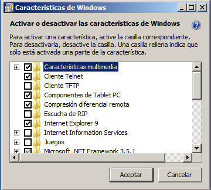
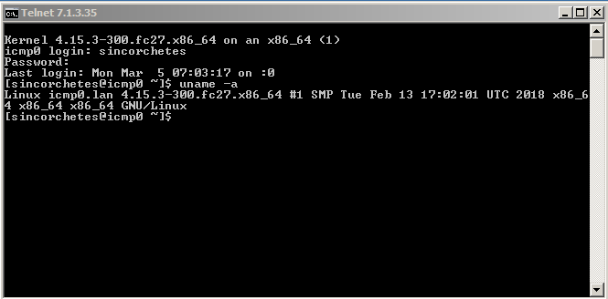
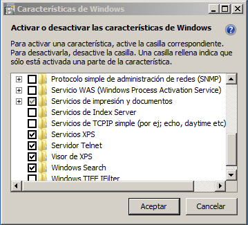

Instalar Telnet en nuestro sistema
Introducción
Telnet es un protocolo cuya función es interconectar dos dispositivos de redes cualesquiera para obtener una administración o gestión remota. Su publicación fue en el 1983 bajo el RFC854 (Request for Comments). Este utiliza el protocolo TCP (Transmission Control Protocol) o lo que es lo mismo, Protocolo de Control de Transmisión con la finalidad de no perder información cuando se tiene una sesión abierta a través de Telnet.
También se le ha atribuido algunos usos como enviar peticiones a servidores Web entre otras cosas.
NOTA: Tenemos que tener en cuenta, que Telnet debe tener el puerto 23 abierto para poder funcionar.
Instalación del cliente
A continuación veremos como instalar el cliente de Telnet tanto en Linux como en Windows.
Linux
Procederemos a instalarlo en las diferentes distribuciones populares:
Fedora
No más sencillo que:
# dnf install telnet
CentOS
Parecido a Fedora:
# yum install telnet-server
OpenSUSE Leap o Tumbleweed
Más fácil imposible:
$ sudo pacman -S telnet
Gentoo
Inconfundible:
$ sudo emerge -av telnet-bsd
Ubuntu, Debian, derivados
Sin dudarlo:
$ sudo apt-get install telnet
Código fuente
Procederemos a explicar cómo instalarlo mediante código fuente: 1. Descargamos el src desde el siguiente enlace. 2. Descomprimimos el archivo 3. Configuramos el prefix
```
./configure --prefix=/usr
```
-
Compilamos
make5. Instalamosmake install6. Y ya podemos utilizarlo
Nota: Tenemos que acordarnos que si utilizamos otro PREFIX que no se encuentre recogido dentro de la variable PATH de algún fichero en /etc/profile.d/ o ~/.bash_profile no saldrá disponible a menos que ejecutes el comando telnet con ruta absoluta.
Windows
Telnet en Windows no lleva mucha complicación ya que en la mayoría de versiones es el mismo procedimiento a realizar.
- Nos dirigimos al Panel de control
- Activar características de Windows
- Marcar el checkbox Cliente Telnet
- Reiniciar y ya podemos acceder al cliente desde
cmd.exe
[owl-carousel items=1 margin=10 loop=true autoplay=true autoplayHoverPause=true nav=true]   [/owl-carousel]
Ejecutando Telnet
Abrimos un intérprete de comandos tanto en Linux bash, gnome-terminal... como en Windows cmd.exe o PowerShell y ejecutamos telnet:
telnet
Conectándonos a un servidor
Para conectarnos basta con hacer:
telnet IP_SERVIDOR
Instalación de un servidor
En este punto instalaremos un servidor de Telnet tanto en Linux como en Windows.
Linux
Distribuciones
Fedora o CentOS
Tan fácil como:
# dnf install telnet-server
# systemctl start telnet.socket
Y ya podremos conectarnos, por ejemplo, desde localhost:
$ telnet 127.0.0.1
OpenSUSE Tumbleweed / Leap
Es un procedimiento un poco más elaborado que el de Fedora:
$ sudo zypper in telnet-server
$ sudo sed -ie 's/yes/no/g' /etc/xinet.d/telnet
Le decimos a xinetd(1) que incie telnet
Nota: xinetd(1) es un servicio que administra las conexiones a determinados servicios utilizados por Internet como en este caso, Telnet.
Iniciando el servidor:
$ sudo systemctl start xinetd
Para probar el servidor, nos intentamos loguear con nuestra propia máquina (loopback):
$ telnet 127.0.0.1
Debian, Ubuntu y derivados
Si en OpenSUSE es xinetd(1), aquí la gente de Debian, Ubuntu y derivados hacen uso de inetd(1), que es el servicio previo a xinetd(1).
$ sudo apt-get install telnetd
Esto bastará para lanzar automáticamente el servicio:
$ telnet 127.0.0.1
Sin embargo, si queremos confirmar y verificar de que se iniciará telnet(1) al arranque del sistema con inetd(1) hay que verificar el archivo /etc/inetd.conf y fijarnos en la línea que nos dice:
telnet stream tcp nowait telnetd /usr/sbin/tcpd /usr/sbin/in.telnetd
Y añadirlo al arranque:
$ sudo systemctl enable inetd
Gentoo (systemd)
Para instalar el servidor de Telnet en Gentoo bastará con hacer los siguientes pasos:
$ sudo emerge -av telnet-bsd
Generamos este fichero en el directorio /etc/systemd/system/telnetd.socket
Description=Telnet Server Activation Socket
Documentation=man:telnetd(8)
[Socket]
ListenStream=23
Accept=true
[Install]
WantedBy=sockets.target
Posteriormente, creamos otro fichero en /etc/systemd/system/telnetd@.service
[Unit]
Description=Telnet Server
After=local-fs.target
[Service]
ExecStart=/usr/sbin/in.telnetd
StandardInput=socket
Lanzamos el servidor:
# systemctl start telnetd.socket
Probamos si funciona con:
$ telnet 127.0.0.1
Añadiendo telnetd(8) al arranque:
# systemctl enable telnetd.socket
Deshabilitándolo:
# systemctl disable telnetd.socket
Código fuente
Para instalarlo en una distribución Linux utilizando systemd como gestor de servicios, hay que acordarse en qué ruta hemos instalado telnetd. Una vez la tengamos, sólo tendremos que crear los ficheros que hemos añadido en el paso de Gentoo con el PREFIX correcto.
Creamos y añadimos la siguiente información /etc/systemd/system/telnetd.socket
Description=Telnet Server Activation Socket
Documentation=man:telnetd(8)
[Socket]
ListenStream=23
Accept=true
[Install]
WantedBy=sockets.target
Luego creamos el fichero /etc/systemd/system/telnetd@.service
[Unit]
Description=Telnet Server
After=local-fs.target
[Service]
ExecStart=/usr/sbin/in.telnetd
StandardInput=socket
Probemos si funciona con:
$ telnet 127.0.0.1
Windows
Para instalar el servidor de Telnet en Windows, los pasos generalmente son los mismos tanto para 7, 8 o 10.
- Nos dirigimos al Panel de control
- Activar características de Windows
- Marcar el checkbox Servidor Telnet
- Reiniciar
- Ejecutamos
services.msc - Buscamos el apartado servidor Telnet -> Clic derecho -> Propiedades
- Pinchar en Deshabilitado -> Manual -> Iniciar (Si queremos que inicie con el sistema lo pasamos a automático)
[owl-carousel items=1 margin=10 loop=true autoplay=true autoplayHoverPause=true nav=true]

 [/owl-carousel]
[/owl-carousel]